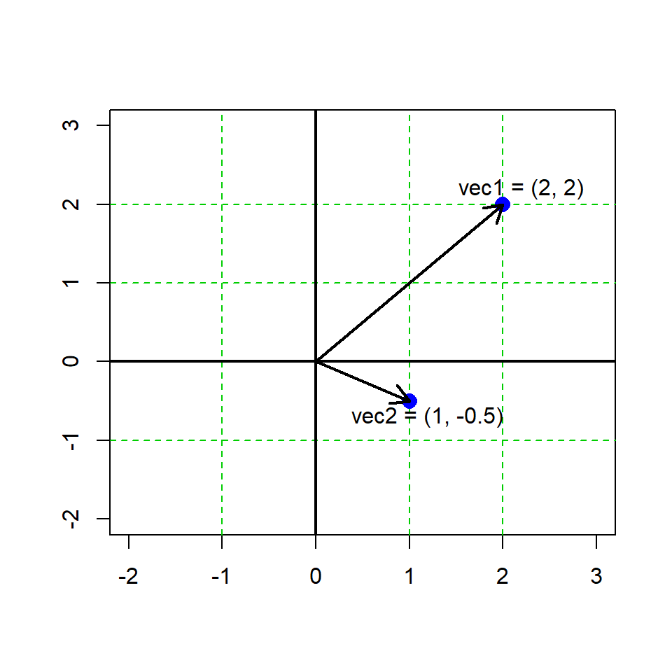
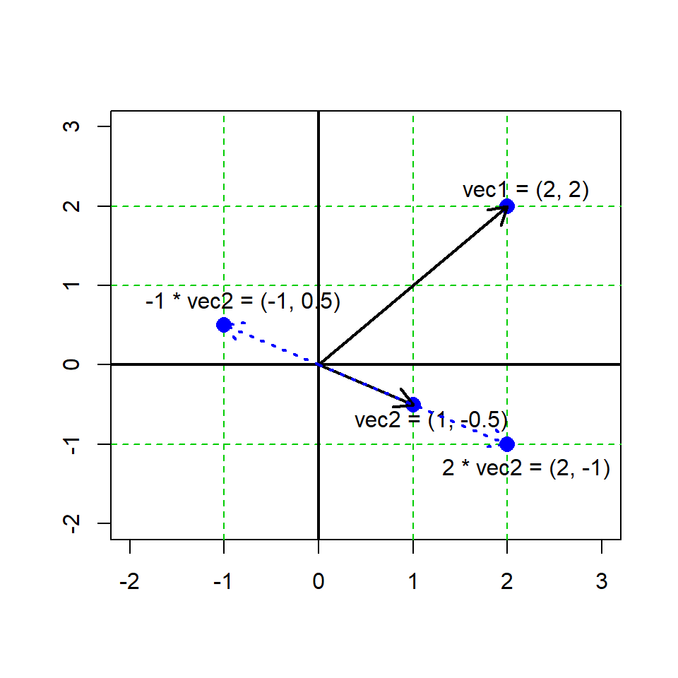
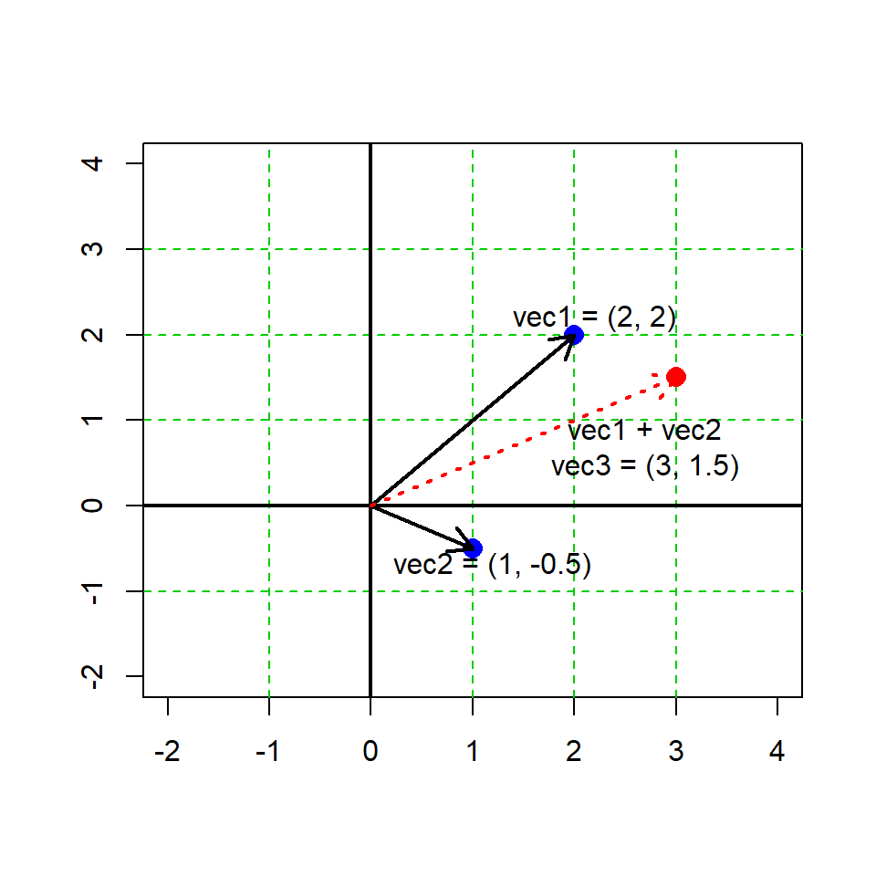
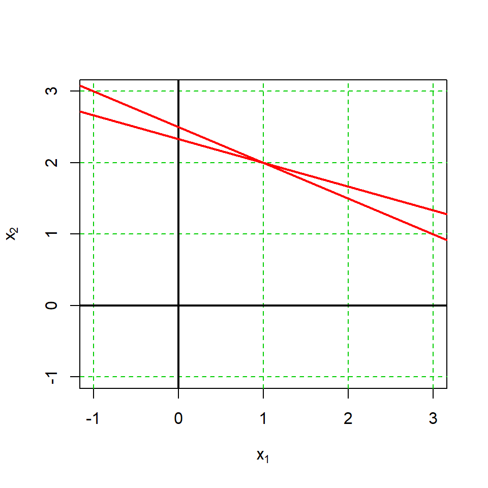
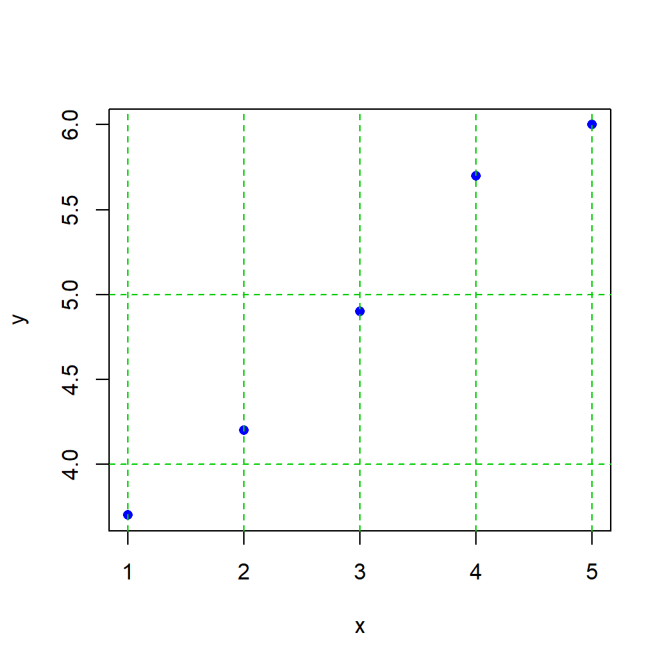

# imagine two vectors that each contain the x,y coordinates of a point
vec1 <- c(2,2)
vec2 <- c(1,-0.5)Lab 01 Linear alg.
1 Why linear algebra?
Linear algebra is the (math) foundation of statistics and data science. While it is possible to practice data analysis without a robust knowledge of algebra, a little bit helps. The purpose here is to highlight and review the key linear algebra concepts and to demonstrate a few examples. By the end of this lab you should be able to:
Describe the structure of vectors and matrices
Perform math functions with linear algebra structures
Demonstrate awareness of linear algebra utility
2 Vectors
2.1 The basic vector concept
Vectors can be conceptualized as a list of numerical values (elements) that may be arranged in columns or rows. A formal difference between column and row vectors is the notation for their arrangement, where a vector has n elements, a row vector is a matrix with \([1 \times n]\) elements; a column vector has \([n \times 1]\) elements.
Column vector:
\(a=\begin{bmatrix} 2 \\ 1 \\ 3 \end{bmatrix}\)
Row vector:
\(b=\begin{bmatrix} 2, 1, 3 \end{bmatrix}\)
Vectors have a specific order such that:
\((2,1,3) \neq (1,2,3)\)
We can generalize the notation for a vector containing n elements as an n-vector such that:
\(a=\begin{bmatrix} a_1 \\ a_2 \\ \vdots \\ a_n \end{bmatrix}\)
where each element \(a_i\) is a numerical value and the vector can be written as \(a=(a_1,\dots,a_n)\).
We can represent vectors graphically, e.g. here is an example in R graphing 2 2-vectors.There are some conventions in geometry and math notation here, that are not necessarily the same as the way we store data structures in a programming language…

Vectors in R are always printed in the ‘row format’, regardless of math notation.
a <- c(4,2,3)
a[1] 4 2 32.2 Transposing
Tansposing a vector is when a column or row vector is turned into the opposite orientation. The transpose is notated with the symbol \(\intercal\)
Column to row format
\(\begin{bmatrix} 4 \\ 8 \\ 5 \end{bmatrix} ^ \intercal = [4, 8, 5]\)
Row to column format
\([4, 8, 5] ^ \intercal = \begin{bmatrix} 4 \\ 8 \\ 5 \end{bmatrix}\)
# transpose in R
a <- c(5,7,6)
# the t() function forces the object as a matrix
t(a) [,1] [,2] [,3]
[1,] 5 7 6# multiple transpose, just to demonstrate
t(t(a)) [,1]
[1,] 5
[2,] 7
[3,] 62.3 Multiplication
A number \(b\) and a vector \(a\) can be multiplied together
\(b \times a =\begin{bmatrix} b \times a_1 \\ b \times a_2 \\ \vdots \\ b \times a_n \end{bmatrix}\)
Thus
\(5 \times \begin{bmatrix} 1 \\ 2 \\ 3 \end{bmatrix} = \begin{bmatrix} 5 \\ 10 \\ 15 \end{bmatrix}\)
# vector multiplication in R
a <- c(2,4,5)
b <- 3
a*b[1] 6 12 15Graphing vector multiplication
# our 2 vectors from before
vec1 <- c(2,2)
vec2 <- c(1,-0.5)
2.4 Addition
Let \(a\) and \(b\) be n-vectors, where \(a\) and \(b\) are of the same dimensions.
\(a + b = \begin{bmatrix} a_1 \\ a_2 \\ \vdots \\ a_n \end{bmatrix} + \begin{bmatrix} b_1 \\ b_2 \\ \vdots \\ b_n \end{bmatrix} = \begin{bmatrix} a_1 + b_1 \\ a_2 + b_2 \\ \vdots \\ a_n + b_n \end{bmatrix} = b+a\)
With numbers
\(a + b = \begin{bmatrix} 1 \\ 3 \\ 5 \end{bmatrix} + \begin{bmatrix} 4 \\ 2 \\ 8 \end{bmatrix} = \begin{bmatrix} 5 \\ 5 \\ 13 \end{bmatrix}\)
# vector addition in R
a <- c(3, 5, 1)
b <- c(14, 3, 5)
a + b[1] 17 8 6# our 2 vectors from before
vec1 <- c(2,2)
vec2 <- c(1,-0.5)
vec3 <- vec1 + vec2
2.5 Vector inner product
The inner product of a vector is obtained by multiplying two vectors and summing the result (NB this is sometimes called the dot product).
\(\sum a*b = a \cdot b = a_1b_1 + \dots + a_nb_n\)
with numbers
\(\sum (\begin{bmatrix} 1 \\ 3 \\ 5 \end{bmatrix} \times \begin{bmatrix} 4 \\ 2 \\ 8 \end{bmatrix}) = \sum \begin{bmatrix} 4 \\ 6 \\ 40 \end{bmatrix} == 50\)
# dot product in R
a <- c(1,3,5)
b <- c(4,2,8)
sum(a * b)[1] 50# alternative syntax for the dot product
a %*% b [,1]
[1,] 502.6 Magnitude (aka the “norm”) of a vector
There are several ways to measure the “bigness” of a vector, sometimes called the norms. Although we will not go into detail here, there are two types of norm to be aware of. These may seem a little esoteric for our purposes here, but they are used “under the bonnet” for many statistical and machine learning calculations (thus, you may encounter them and should probably be aware of them).
L1 norm (aka the outer norm) - this is the overall absolute magnitude of vector values
L2 norm (aka the inner norm) this is the linear (“Euclidean”) distance of the vector from the origin (the zero value in n-dimensional space).
L1 norm
The L1 norm is calculated by summing the absolute value of all vector elements.
Take a vector \(a = (2, -4, 5)\)
\(||a||_1 = \sum(|a_1|+ \dots + |a_n|)\)
\(||a||_1 = (2 + 4 + 5) = 11\)
L2 norm
The L2 norm is calculated by taking the square root of the summed values of the squared values of each element of a vector.
Take a vector \(b = (-1, 0, 3)\)
\(||b||_2 = \sqrt(b_1^2+ \dots + b_n^2)\)
\(||b||_2 = \sqrt(1 + 0 + 9) = 3.16\)
# norms in R
a <- c(2, -4, 5)
b <- c(-1, 0, 3)
sum(abs(a)) # L1[1] 11sqrt(sum(b^2)) # L2[1] 3.162278# alternative calculation using the norm() function
# ?norm
norm(matrix(a), type = "O") # L1[1] 11norm(matrix(b), type = "2") # L2[1] 3.1622782.7 Special vectors
There are a few special cases of vectors we may encounter (but which are certainly there “doing work” for us), like the 0-vector and the 1-vector. These are simply vectors where all values assume either zero or one, respectively. These are often used in linear models to encode data for matrix calculations (but we will leave it at that for now).
# 0-matrix, n=10
rep(0, 10) [1] 0 0 0 0 0 0 0 0 0 0# 1-matrix, n=8
rep(1, 8)[1] 1 1 1 1 1 1 1 12.8 Orthogonal vectors
Orthogonal vectors are used in a number of statistical methods, e.g. multivariate statistics like principal component analysis (PCA). Here, orthogonal means perpendicular. We determine orthogonality by taking the inner product of two vectors.
Take two vectors \(a\) and \(b\), they are orthogonal if and only if
\(a \perp b \iff a \cdot b = 0\)
a <- c(3,-3)
b <- c(3, 3)
sum(a*b) # yep, a and b are orthogonal![1] 03 Matrices
3.1 Description
Matrices are described by the number of rows and columns they have. We may say a matrix \(A\) to have dimensions \(r \times c\), (rows \(\times\) columns).
\(A = \begin{bmatrix} a_{11} & a_{12} & \dots & a_{1c} \\ a_{21} & a_{22} & \dots & a_{2c} \\ \vdots & \vdots & \ddots & \vdots \\ a_{r1} & a_{r2} & \dots & a_{rc} \end{bmatrix}\)
# make matrix, vector assembled "by column"
A <- matrix(c(4,3,6,2,7,4,4,5,4), ncol = 3)
A [,1] [,2] [,3]
[1,] 4 2 4
[2,] 3 7 5
[3,] 6 4 4A matrix can be constructed “by row” as well in R, with very different consequences.
# make matrix, vector assembled "by row"
B <- matrix(c(4,3,6,2,7,4,4,5,4), ncol = 3, byrow=T)
B [,1] [,2] [,3]
[1,] 4 3 6
[2,] 2 7 4
[3,] 4 5 43.2 Multiplying matrices
For a number \(\alpha\) and a matrix \(A\), the product of \(\alpha A\) is the matrix obtained by multiplying each element of \(A\) to \(\alpha\).
\(\alpha = 3\)
\(A = \begin{bmatrix} 1 & 3 \\ 2 & 4 \\ 1 & 1 \end{bmatrix}\)
\(3 \times\begin{bmatrix} 1 & 3 \\ 2 & 4 \\ 1 & 1 \end{bmatrix} = \begin{bmatrix} 3 & 9 \\ 6 & 12 \\ 3 & 3 \end{bmatrix}\)
# matrix multiplication in R
alpha <- 3
A <- matrix(c(1,3,2,4,1,1), byrow=T, ncol=2)
alpha*A [,1] [,2]
[1,] 3 9
[2,] 6 12
[3,] 3 33.3 Transpose for matrices
Matrix trasposition works similarly to vector transpostiion and is also denoted by \(\intercal\)
\(\begin{bmatrix} 1 & 3 \\ 2 & 4 \\ 1 & 1 \end{bmatrix}^ \intercal = \begin{bmatrix} 1 & 2 & 1 \\ 3 & 4 & 1 \end{bmatrix}\)
# Matrix transpose in R
A <- matrix(c(1,3,2,4,1,1), byrow=T, ncol=2)
t(A) [,1] [,2] [,3]
[1,] 1 2 1
[2,] 3 4 13.4 Sum of matrices
Let \(A\) and \(B\) be matrices of dimensions \(r \times c\). We sum the matrices together element-wise. The matrices must be of exactly the same dimensions.
\(\begin{bmatrix} 1 & 3 \\ 2 & 4 \\ 1 & 1 \end{bmatrix} - \begin{bmatrix} 7 & 1 \\ 1 & 1 \\ 4 & 4 \end{bmatrix} = \begin{bmatrix} 8 & 4 \\ 3 & 5 \\ 5 & 5 \end{bmatrix}\)
# Adding matrices in R
A <- matrix(c(1,3,2,4,1,1), byrow=3, ncol=2)
B <- matrix(c(7,1,1,1,4,4), byrow=3, ncol=2)
A +B [,1] [,2]
[1,] 8 4
[2,] 3 5
[3,] 5 53.5 Multiplying matrix x vector
Let \(A\) be an \(r \times c\) matrix and let \(B\) be a column vector with \(c\) dimensions Note the number of elements in one dimension (here \(c\)) must be the same.
\(\begin{bmatrix} a_{11} & a_{12} & \dots & a_{1c} \\ a_{21} & a_{22} & \dots & a_{2c} \\ \vdots & \vdots & \ddots & \vdots \\ a_{r1} & a_{r2} & \dots & a_{rc} \end{bmatrix} \times \begin{bmatrix} b_{1} \\ b_{2} \\ \vdots \\ b_{c} \end{bmatrix} = \begin{bmatrix} a_{11} b_{1} + a_{12} b_{2} + \dots + a_{1c}b_{c} \\ a_{21} b_{1} + a_{22} b_{2} + \dots + a_{2c} b_{c} \\ \vdots \\ a_{r1} b_{1} + a_{r2} b_{2} + \dots + a_{rc} b_{c} \end{bmatrix}\)
For example:
\(\begin{bmatrix} 1 & 3 \\ 2 & 4 \\ 1 & 1 \end{bmatrix} \times \begin{bmatrix} 7 \\ 1 \end{bmatrix} = \begin{bmatrix} 1 \cdot 7 + 3 \cdot 1 \\ 2 \cdot 7 + 4 \cdot 1 \\ 1 \cdot 7 + 1 \cdot 1 \end{bmatrix}\begin{bmatrix} 10 \\ 18 \\ 8 \end{bmatrix}\)
# Matrix x vector multiplication in R
A <- matrix(c(1,3,2,4,1,1), byrow=3, ncol=2)
C <- c(7,1)
# NB the %*% syntax, correct for matrix x vector
A %*% C [,1]
[1,] 10
[2,] 18
[3,] 8# NB this will also evaluate, but has a different result...
# Can you tell what is going on here?
A * C [,1] [,2]
[1,] 7 3
[2,] 2 28
[3,] 7 13.6 Multiplying matrix x matrix
(Here it gets tricky)
Let \(A\) be an \(r \times c\) matrix and \(B\) be a \(c \times t\) matrix, where the number of columns in \(A\) is equal to the number of rows in \(B\).
# Matrix x matrix multiplication in R
A <- matrix(c(1, 3, 2, 2, 8, 9), ncol = 2)
B <- matrix(c(5, 8, 4, 2), ncol = 2)
# NB the %*% syntax
A %*% B [,1] [,2]
[1,] 21 8
[2,] 79 28
[3,] 82 263.7 Vectors as matrics
Vectors can be treated as matrices and in R can be coerced to matrix objects, where a column vector of length \(r\) becomes an \(r \times 1\) matrix or a row vector of length \(c\) becomes a \(1 \times c\) matrix
# Vectors as matrices in R
# Vanilla numeric vector
(A <- c(4,5,8)); class(A)[1] 4 5 8[1] "numeric"# Column matrix
(A <- matrix(c(4,5,8), nrow=3)); class(A) [,1]
[1,] 4
[2,] 5
[3,] 8[1] "matrix" "array" # Row matrix
(A <- matrix(c(4,5,8), ncol=3)); class(A) [,1] [,2] [,3]
[1,] 4 5 8[1] "matrix" "array" 3.8 Special matrics
– Square matrix An n × n matrix
– Symmetric matrix A is if \(A = A^\intercal\).
– 0-matrix A matrix with 0 on all entries, often written simply as 0.
– 1-matrix A matrix with 1 on all entries, often written simply as J.
– Diagonal matrix A square matrix with 0 on all off–diagonal entries and elements d1, d2, … , dn on the diagonal, often written diag{d1, d2, … , dn}
– Identity matrix is one with with all 1s on the diagonal, denoted I and satisfies that IA = AI = A.
# 0-matrix
matrix(0, nrow = 2, ncol = 3) [,1] [,2] [,3]
[1,] 0 0 0
[2,] 0 0 0# 1-matrix
matrix(1, nrow = 2, ncol = 3) [,1] [,2] [,3]
[1,] 1 1 1
[2,] 1 1 1# Diagonal matrix
diag(c(1, 2, 3)) [,1] [,2] [,3]
[1,] 1 0 0
[2,] 0 2 0
[3,] 0 0 3# Identity matrix
diag(1, 3) [,1] [,2] [,3]
[1,] 1 0 0
[2,] 0 1 0
[3,] 0 0 1# Note what happens when diag() is applied to a matrix
(D <- diag(c(4,3,5))) [,1] [,2] [,3]
[1,] 4 0 0
[2,] 0 3 0
[3,] 0 0 5diag(D)[1] 4 3 5(A <- matrix(c(1,3,2,2,6,8,9,3,4), ncol = 3)) [,1] [,2] [,3]
[1,] 1 2 9
[2,] 3 6 3
[3,] 2 8 4diag(A)[1] 1 6 43.9 Inverse of a matrix
The inverse of an \(n × n\) matrix \(A\) is the \(n × n\) matrix \(B\) (which is which when multiplied with A gives the identity matrix I. That is, \(AB = BA = I\).
Thus
\(B\) is the inverse of \(A\), written as \(B = A^{−1}\) and
\(A\) is the inverse of \(B\), written as \(A = B^{−1}\)
Numeric example
$ A = \[\begin{bmatrix} 1 & 3 \\ 2 & 4 \end{bmatrix}\]$
$ B = \[\begin{bmatrix} -2 & 1.5 \\ 1 & -0.5 \end{bmatrix}\]$
We can show \(AB = BA = I\), thus \(B=A^{-1}\)
# Inverse of matrices
(A <- matrix(c(1,3,2,4), ncol=2, byrow=T)) [,1] [,2]
[1,] 1 3
[2,] 2 4(B <- matrix(c(-2,1.5,1,-0.5), ncol=2, byrow=T)) [,1] [,2]
[1,] -2 1.5
[2,] 1 -0.5A%*%B [,1] [,2]
[1,] 1 0
[2,] 0 1B%*%A == diag(1,2) [,1] [,2]
[1,] TRUE TRUE
[2,] TRUE TRUE– Only square matrices can have an inverse, but not all square matrices have an inverse. – When the inverse exists, it is unique. – Finding the inverse of a large matrix A is numerically complicated (but computers do it for us).
# Solving the inverse of a matrix in R using solve()
(A <- matrix(c(1,3,2,4), ncol=2, byrow=T)) [,1] [,2]
[1,] 1 3
[2,] 2 4(B <- solve(A)) [,1] [,2]
[1,] -2 1.5
[2,] 1 -0.5# Prove the rule
A %*% B [,1] [,2]
[1,] 1 0
[2,] 0 14 Special topics
4.1 Solving linear equations
Matrix math is related to math that can be used to solve linear equation systems. This is a very large topic and we will only briefly touch upon it, but it is core in statistics and in machine learning. We can sometimes ignore the details, but awareness of this area of math will likely be beneficial.
Consider these two linear equations
Eq 1: \(x_1 + 3x_2 = 7\)
Eq 2: \(2x_1 + 4x_2 = 10\)
We can write this “system” of equations in matrix form, from which is derived the notation for statistical linear models. Let’s define the matrices \(A\), \(x\) and \(b\) as:
\(\begin{bmatrix} 1 & 3 \\ 2 & 4 \end{bmatrix} \begin{bmatrix} x_1 \\ x_2 \end{bmatrix} = \begin{bmatrix} 7 \\ 10 \end{bmatrix}\), i.e. \(Ax = b\)
Because \(A^{-1}A = I\) and \(Ix=x\):
\(x = A^{-1}b = \begin{bmatrix} -2 & 1.5 \\ 1 & -0.5 \end{bmatrix} \begin{bmatrix} 7 \\ 10 \end{bmatrix} = \begin{bmatrix} 1 \\ 2 \end{bmatrix}\)
This way of thinking is the foundation of the linear model and we can exploit it to isolate and “solve” for the x values. E.g. we can isolate and solve for \(x_2\) as:
Eq 1 (rerarranged): \(x_2 = \frac{7}{3}-\frac{1}{3}x_1\)
Eq 2 (rerarranged): \(x_2 = \frac{10}{4}-\frac{2}{4}x_1\)
\(x_2 = \frac{7}{3}-\frac{1}{3}x_1\)
\(x_2 = \frac{10}{4}-\frac{2}{4}x_1\)
Now we can graphically represent these equations, which are two lines and which demonstrate the solutions
plot(x=NULL, y=NULL,
xlim = c(-1,3), ylim = c(-1,3),
pch = 16,
xlab=expression('x'[1]),
ylab=expression('x'[2]))
abline(h=c(-1:3),v=c(-1:3),
lty=2, col='green3')
abline(h=0, v=0, lwd=2)
abline(a=7/3, b=-1/3, col="red", lwd=2)
abline(a=10/4, b=-2/4, col="red", lwd=2)
The lines represent the solved equations above, and it can be seen that they cross at a single point, the solutions for \(x_1\) and \(x_2\), \(x_1 = 1\) and \(x_2=2\), respectively.
A <- matrix(c(1, 2, 3, 4), ncol = 2)
b <- c(7, 10)
(x <- solve(A) %*% b) [,1]
[1,] 1
[2,] 2While in this example we see exactly 1 solution, there are several possibilities in general:
- Exactly one solution – when the lines intersect in one point
- No solutions – when the lines are parallel but not identical
- Infinitely many solutions – when the lines coincide.
4.2 Matrix equalities
Here are a few additional properties of matrices
\((A + B)^\intercal = A^\intercal + B^\intercal\)
\((AB)^\intercal = B^\intercal A^\intercal\)
\(A(B + C) = AB + AC\)
\(AB = AC \not\Rightarrow B = C\)
\(AB \neq BA\) (in general)
\(AI = IA = A\)
If \(\alpha\) is a number then \(\alpha AB = A(\alpha B)\)
4.3 Least squares
Consider the following paired values
df <- data.frame(x=c(1,2,3,4,5),
y=c(3.7, 4.2,4.9,5.7,6.0))
df x y
1 1 3.7
2 2 4.2
3 3 4.9
4 4 5.7
5 5 6.0We can plot these values and note that the relationship is approvimately linear (i.e., a straight line can be drawn that comes close to all the values)

We can notate the linear relationship between \(x\) and \(y\) with
\(y_i = \beta_0 +\beta_1x_i\) for \(i = 1, \dots, 5\)
This can be written in matrix form
\(y = \begin{bmatrix} y_1 \\ y_2 \\ \vdots \\ y_5 \end{bmatrix} \approx \begin{bmatrix} 1 & x_1 \\ 1 & x_2 \\ \vdots & \vdots \\1 & x_5 \\ \end{bmatrix} \begin{bmatrix} \beta_0 \\ \beta_1\end{bmatrix} = \mathbf{X \beta}\)
Given that we have vectors \(y\) and \(x\), how can we find the vector \(\mathbf{\beta}\) to satisfy this equality such that \(y=X \beta\)?
Actually, the answer is no because this would require the points to lie on an exactly straight line! However, it may be useful to find an estimate of \(\beta\) such that \(\mathbf{X \beta}\) is “as close to \(y\) as possible”. Let’s call this estimate \(\hat{\beta}\)
To do this we would like to find \(\hat{\beta}\) that minimizes the equation
\(e=y- \mathbf{X \beta}\)
The solution to this problem is the basis of linear regression and other linear statistical models:
\(\hat{\beta} = (X^\intercal X)^{-1} X^\intercal y\)
y <- c(3.7, 4.2,4.9,5.7,6.0)
x <- c(1,2,3,4,5)
X <- matrix(c(rep(1,5), x), ncol=2, byrow=F)
colnames(X) <- c('','x')
y[1] 3.7 4.2 4.9 5.7 6.0X x
[1,] 1 1
[2,] 1 2
[3,] 1 3
[4,] 1 4
[5,] 1 5# this solves "Beta hat"
# NB, the intercept and slope coeeficients for linear regression!
(beta.hat <- solve(t(X) %*% X) %*% t(X) %*% y) [,1]
3.07
x 0.615 Exercises
5.1 The bird table
On a sunny day, two tables are standing in an English country garden. On each table are *birds of unknown species are sitting having the time of their lives. A bird from the first table says to those on the second table: “Hi – if one of you come to our table then there will be the same number of us on each table”. “Yeah, right”, says a bird from the second table, “but if one of you comes to our table, then we will be twice as many on our table as on yours”.
*(because this is a maths question, here we have the ability to assume by birds we may mean something theoretical, and the count of which may assume any value from the infinite set of integers positive or negative…)
Question: How many birds are on each table?
Write up two equations with two unknowns
Solve these equations using the methods you have learned from linear algebra
Simply finding the solution by trial–and–error is invalid (and will probably lead to frustration, especially if the question is taken literally - i.e., USE THE TOOLS we practiced)
Resources
Here are a few web resources for self learning if you wish to go farther
3Blue1Brown Essence of linear algebra
Khan Academy linear algebra series
Coursera Mathematics for machine learning linear algebra course (Imperial College London - free to audit)
MIT x18.06 Gilbert Strang’s famous linear algebra course
Harper Adams Data Science

This module is a part of the MSc in Data Science for Global Agriculture, Food, and Environment at Harper Adams University, led by Ed Harris.